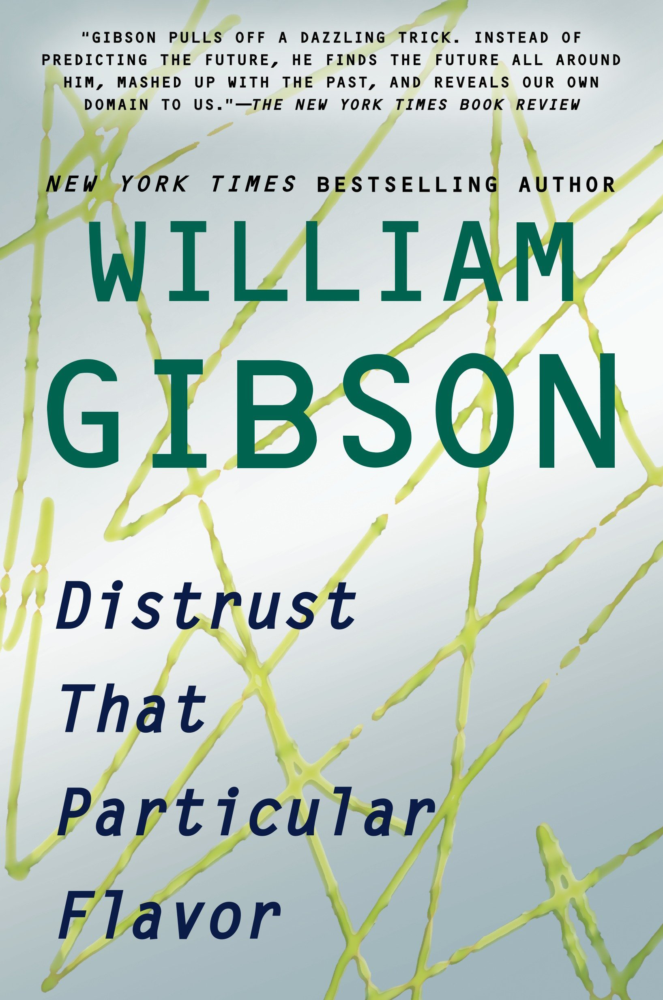
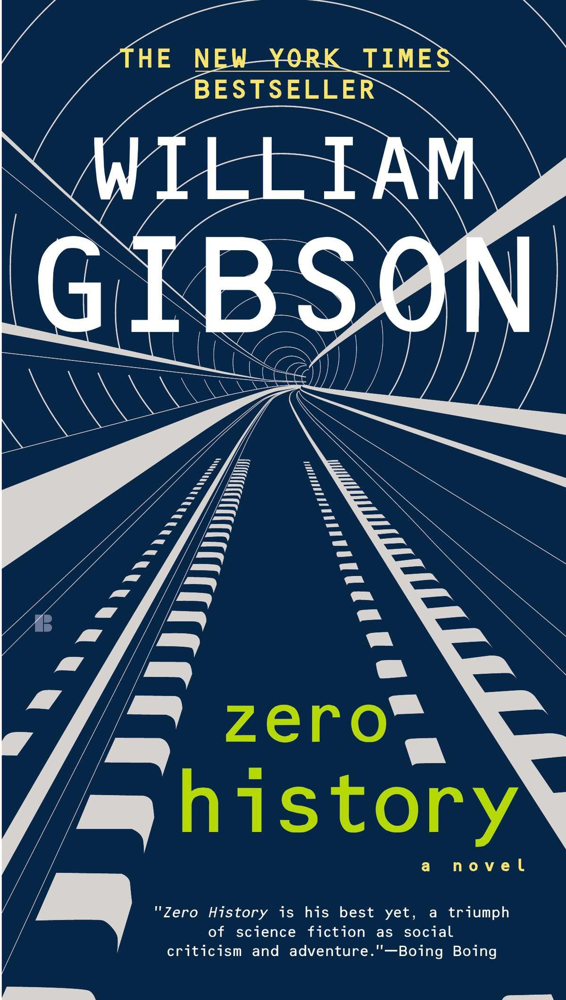
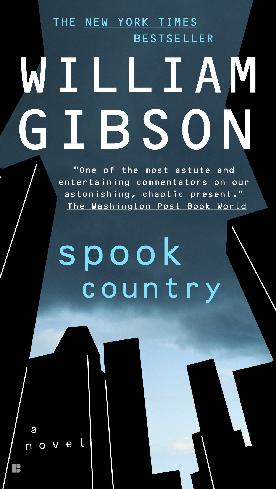
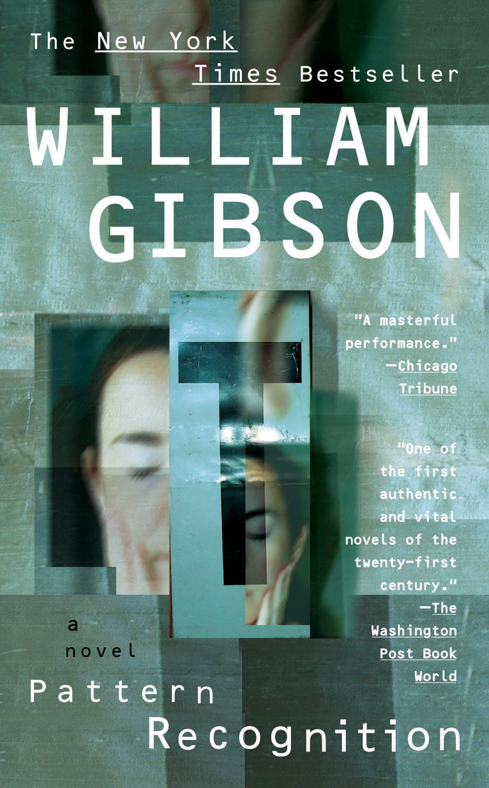
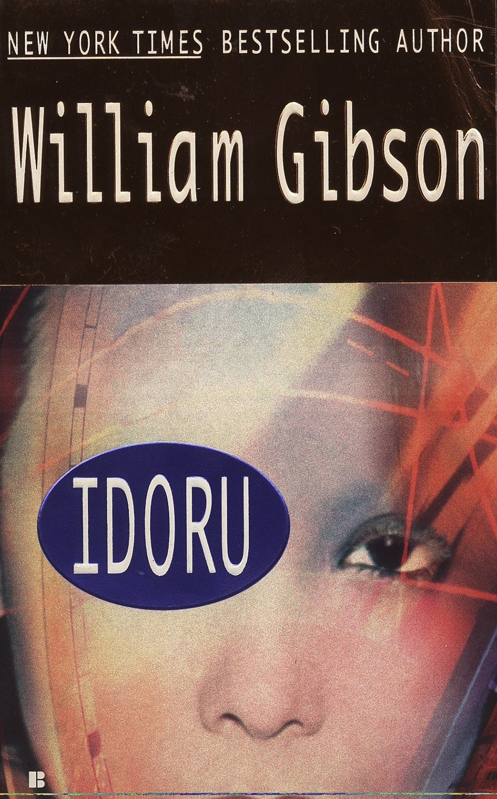
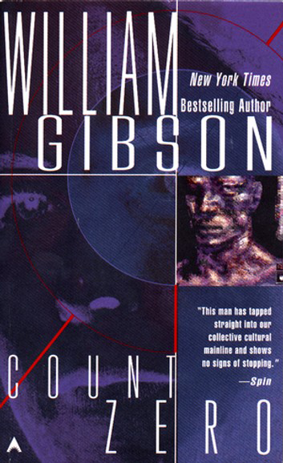
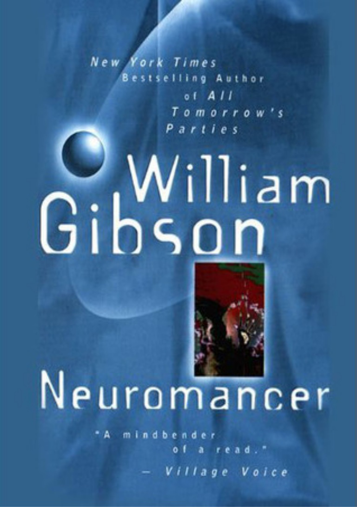

Where Flynne and her brother, Burton, live, jobs outside the drug business are rare. Fortunately, Burton has his veteran’s benefits, for neural damage he suffered from implants during his time in the USMC’s elite Haptic Recon force. Then one night Burton has to go out, but there’s a job he’s supposed to do—a job Flynne didn’t know he had. Beta-testing part of a new game, he tells her. The job seems to be simple: work a perimeter around the image of a tower building. Little buglike things turn up. He’s supposed to get in their way, edge them back. That’s all there is to it. He’s offering Flynne a good price to take over for him. What she sees, though, isn’t what Burton told her to expect. It might be a game, but it might also be murder.
William Gibson is known primarily as a novelist, with his work ranging from his groundbreaking first novel, Neuromancer, to his more recent contemporary bestsellers Pattern Recognition, Spook Country, and Zero History. During those nearly thirty years, though, Gibson has been sought out by widely varying publications for his insights into contemporary culture. Wired magazine sent him to Singapore to report on one of the world’s most buttoned-up states. The New York Times Magazine asked him to describe what was wrong with the Internet. Rolling Stone published his essay on the ways our lives are all “soundtracked” by the music and the culture around us. And in a speech at the 2010 Book Expo, he memorably described the interactive relationship between writer and reader.
Hollis Henry worked for the global marketing magnate Hubertus Bigend once before. She never meant to repeat the experience. But she’s broke, and Bigend never feels it’s beneath him to use whatever power comes his way -- in this case, the power of money to bring Hollis onto his team again. Not that she knows what the “team” is up to, not at first. Milgrim is even more thoroughly owned by Bigend. He’s worth owning for his useful gift of seeming to disappear in almost any setting, and his Russian is perfectly idiomatic – so much so that he spoke Russian with his therapist, in the secret Swiss clinic where Bigend paid for him to be cured of the addiction that would have killed him. Garreth has a passion for extreme sports. Most recently he jumped off the highest building in the world, opening his chute at the last moment, and he has a new thighbone made of rattan baked into bone, entirely experimental, to show for it. Garreth isn’t owned by Bigend at all. Garreth has friends from whom he can call in the kinds of favors that a man like Bigend will find he needs, when things go unexpectedly sideways, in a world a man like Bigend is accustomed to controlling. As when a Department of Defense contract for combat-wear turns out to be the gateway drug for arms dealers so shadowy that even Bigend, whose subtlety and power in the private sector would be hard to overstate, finds himself outmaneuvered and adrift in a seriously dangerous world.
Tito is in his early twenties. Born in Cuba, he speaks fluent Russian, lives in one room in a NoLita warehouse, and does delicate jobs involving information transfer. Hollis Henry is an investigative journalist, on assignment from a magazine called Node. Node doesn’t exist yet, which is fine; she’s used to that. But it seems to be actively blocking the kind of buzz that magazines normally cultivate before they start up. Really actively blocking it. It’s odd, even a little scary, if Hollis lets herself think about it much. Which she doesn’t; she can’t afford to. Milgrim is a junkie. A high-end junkie, hooked on prescription antianxiety drugs. Milgrim figures he wouldn’t survive twenty-four hours if Brown, the mystery man who saved him from a misunderstanding with his dealer, ever stopped supplying those little bubble packs. What exactly Brown is up to Milgrim can’t say, but it seems to be military in nature. At least, Milgrim’s very nuanced Russian would seem to be a big part of it, as would breaking into locked rooms. Bobby Chombo is a “producer,” and an enigma. In his day job, Bobby is a troubleshooter for manufacturers of military navigation equipment. He refuses to sleep in the same place twice. He meets no one. Hollis Henry has been told to find him.
Cayce Pollard is an expensive, spookily intuitive market-research consultant. In London on a job, she is offered a secret assignment: to investigate some intriguing snippets of video that have been appearing on the Internet. An entire subculture of people is obsessed with these bits of footage, and anybody who can create that kind of brand loyalty would be a gold mine for Cayce’s client. But when her borrowed apartment is burgled and her computer hacked, she realizes there’s more to this project than she had expected.
Twenty-first century Tokyo, after the millennial quake. Neon rain. Light everywhere blowing under any door you might try to close. Where the New Buildings, the largest in the world, erect themselves unaided, their slow rippling movements like the contractions of a sea-creature… When Rez, the lead singer for the rock band Lo/Rez is rumored to be engaged to an “idoru” or “idol singer”—an artificial celebrity creation of information software agents—14-year-old Chia Pet McKenzie is sent by the band’s fan club to Tokyo to uncover the facts. At the same time, Colin Laney, a data specialist for Slitscan television, uncovers and publicizes a network scandal. He flees to Tokyo to escape the network’s wrath. As Chia struggles to find the truth, Colin struggles to preserve it, in a futuristic society so media-saturated that only computers hold the hope for imagination, hope and spirituality.
A stylish, streetsmart, frighteningly probable parable of the future from the New York Times bestselling author of Neuromancer. A corporate mercenary wakes in a reconstructed body, a beautiful woman by his side. Then Hosaka Corporation reactivates him, for a mission more dangerous than the one he’s recovering from: to get a defecting chief of R&D—and the biochip he’s perfected—out intact. But this proves to be of supreme interest to certain other parties—some of whom aren’t remotely human…
Hotwired to the leading edges of art and technology, Neuromancer is a cyberpunk, science fiction masterpiece—a classic that ranks with 1984 and Brave New World as one of the twentieth century’s most potent visions of the future. Winner of the Hugo, Nebula, and Philip K. Dick Awards, Neuromancer is a science fiction masterpiece—a classic that ranks as one of the twentieth century’s most potent visions of the future. Case was the sharpest data-thief in the matrix—until he crossed the wrong people and they crippled his nervous system, banishing him from cyberspace. Now a mysterious new employer has recruited him for a last-chance run at an unthinkably powerful artificial intelligence. With a dead man riding shotgun and Molly, a mirror-eyed street-samurai, to watch his back, Case is ready for the adventure that upped the ante on an entire genre of fiction. Neuromancer was the first fully-realized glimpse of humankind’s digital future—a shocking vision that has challenged our assumptions about technology and ourselves, reinvented the way we speak and think, and forever altered the landscape of our imaginations.